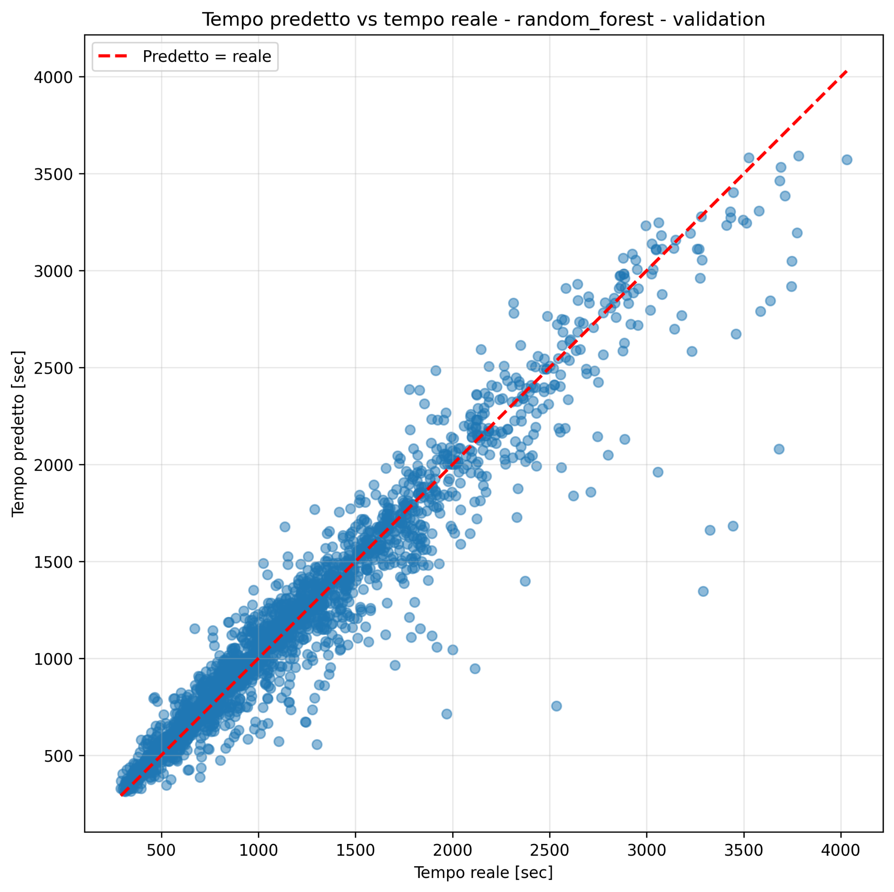
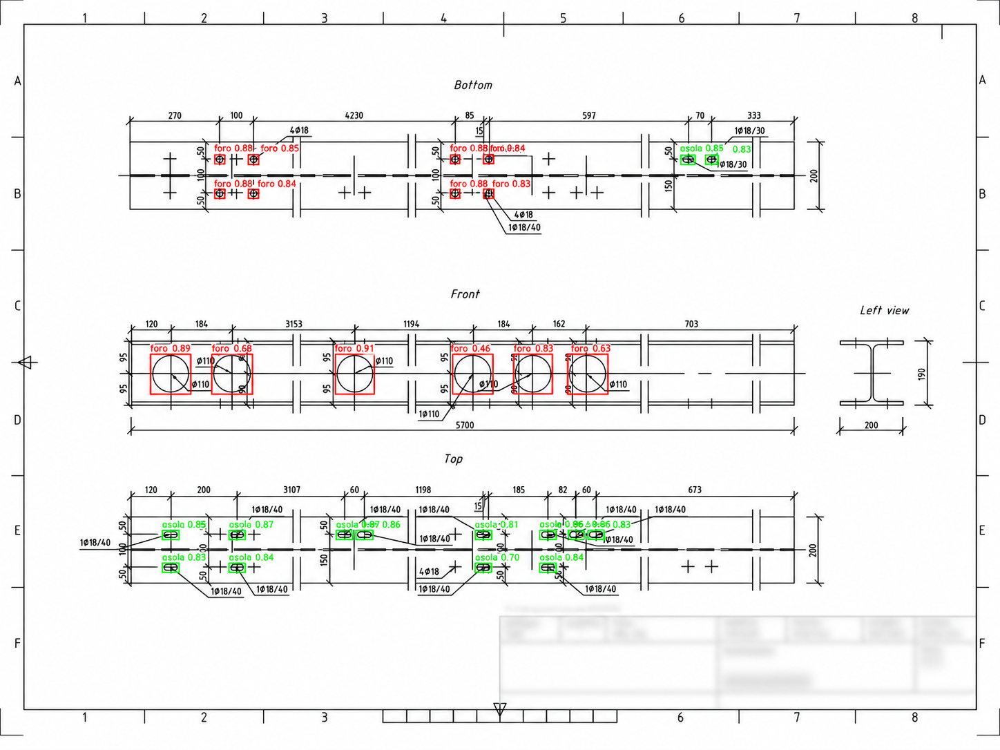
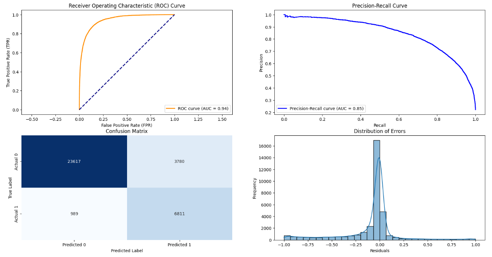
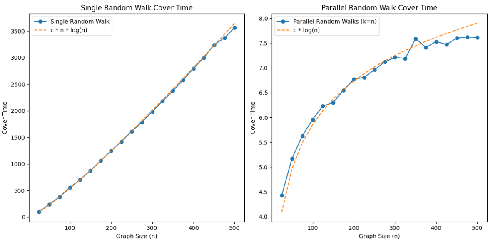

R² .932AI/ML DEVELOPER & DATA SCIENTIST
Filippo
Vicentini
.
Applied AI for real
industrial and business problems.
Computer Vision Generative AI Predictive ML
I build and deploy machine learning solutions across Computer Vision, predictive modeling, and Generative AI—combining an applied mathematics foundation with hands-on industrial development.
M.Sc. Data Science
B.Sc. Applied Mathematics
WHAT I BUILD
Computer Vision
Predictive ML
Generative AI
Deep Learning
Object Detection
RAG Systems
AI Agents
Data Analytics
Model Explainability
MLOps
API Deployment
GPU Training
01 / SELECTED PROJECTS
Theory meets
real-world problems.
Four featured case studies across industry,
machine learning, computer vision, and probability.
FEATURED CASE STUDIES
04 projects

YOLO · 3 classes
AUC .957
n log n → log n
MACHINE LEARNING / INDUSTRY
THESIS + WORK
Predict processing times. Improve production.
Prediction of machine processing times from structural and operational features, from model comparison and explainability through to deployment on a Linux server.
University of Verona × Manni Sipre
COMPUTER VISION / INDUSTRY
WORK
Object detection in industrial technical drawings.
A YOLO-based workflow that turns technical drawings into machine-readable information by detecting production-relevant geometric features.
Manni Sipre · Work project
CLASSIFICATION / WEATHER
UNIVERSITY
Rain prediction under class imbalance.
A comparative classification study focused on model choice, resampling strategies, and the precision–recall trade-off for next-day rain prediction.
PROBABILITY / SIMULATION
UNIVERSITY
Single vs. parallel random walks.
Simulation of graph cover times showing how parallel random walks can dramatically change the scaling behavior of exploration.
MORE PROJECTS
Additional academic work across data analysis and statistical learning.
DATA ANALYSIS / E-COMMERCE
UNIVERSITY
Amazon Sales Analysis
Exploratory analysis of Amazon India sales data, predictive analysis of rejected orders, and interactive visualization of insights.
ANOMALY DETECTION / ROBOTICS
UNIVERSITY
Anomaly Detection in Robotics
Detection of anomalies in robotic movements using supervised and unsupervised methods, with evaluation of predictive performance and efficiency.
02 / EXPERIENCE
From data science.
To production AI.
At Manni Sipre's Business Innovation Office, I work on AI solutions that connect models, software, and real industrial processes.
OCT 2024
Junior Data Scientist
Internship
SEP 2025
AI/ML Developer
Current role
My path evolved from predictive analytics and dashboards to building, evaluating, and deploying AI systems for industrial use cases.
AI/ML Developer
Manni Sipre S.p.A. · Manni Group
Computer Vision · Generative AI · Deployment · Analytics
Object Detection in Industrial Technical DrawingsJunior Data Scientist
Manni Sipre S.p.A.
Predictive Modeling · Analytics · Data Products
Predicting Industrial Processing TimesSEP 2025 — PRESENT
CURRENTAI/ML Developer
Manni Sipre S.p.A. · Manni Group
Computer Vision Generative AI Deployment Analytics
Building applied AI solutions across computer vision, generative AI, analytics, and software deployment, with a focus on tools that can support real production and business workflows.
Computer Vision
YOLO and OpenCV pipelines for industrial technical drawings, including GPU training, evaluation, and optimization.
Generative AI
RAG prototypes and agentic workflows for documents, internal knowledge, and information retrieval.
Deployment
Applications and microservices built with FastAPI, Docker, and REST APIs.
Analytics
KPI dashboards and data-driven tools designed to support operational visibility and business processes.
OCT 2024 — AUG 2025
INTERNSHIPJunior Data Scientist
Manni Sipre S.p.A.
Predictive Modeling Analytics Data Products
Applied machine learning and analytics to industrial and commercial data, working on predictive models and interactive dashboards for operational use cases.
Predictive Modeling
Production-time prediction, customer segmentation, and sales-volume forecasting.
Data Products
Interactive dashboards for KPI monitoring and operational performance analysis.
03 / SKILLS
Built around AI.
Grounded in data.
A practical stack for building, evaluating,
and deploying AI solutions end to end.
Machine Learning
Predict · evaluate · explain
XGBoostScikit-learnSHAP
Processing Times
Computer Vision
Detect · classify · inspect
YOLOOpenCVPyTorch
Technical Drawings
Generative AI
Retrieve · reason · automate
RAGAgentsLLM workflows
Deep Learning
Train · optimize · generalize
PyTorchNeural NetsGPU Training
Deployment
Serve · containerize · integrate
FastAPIDockerREST APIs
Data & Analytics
Explore · visualize · decide
SQLPandasNumPyPower BI
FOUNDATION
Python/Applied Mathematics/Statistical Learning
CORE FOUNDATION
Python
/
Applied Mathematics
/
Statistical Learning
01MODELS
Machine Learning
Predictive modeling, model evaluation and explainability for structured data and real operational problems.
02VISION
Computer Vision
Object detection, classification and inspection pipelines applied to industrial technical drawings and visual workflows.
03GEN AI
Generative AI
RAG systems, AI agents and document understanding for retrieval, reasoning and application-oriented workflows.
04DEEP
Deep Learning
Neural-network training, evaluation and optimization, including GPU-accelerated experimentation for predictive and vision tasks.
05SHIP
Deployment & MLOps
Turning experiments into usable services and applications with reproducible deployment and integration workflows.
06DATA
Data & Analytics
Data manipulation, exploration, visualization and reporting to support modeling and operational decision-making.
ADDITIONAL TOOLS
Java · MATLAB · Excel · VS Code
LANGUAGES
Italian — native · English — professional
04 / EDUCATION & CERTIFICATIONS
Academic foundations.
Applied AI learning.
A background in applied mathematics and data science, complemented by focused training in AI agents and retrieval-augmented generation.
M.Sc. Data Science
University of Verona
Thesis case studyB.Sc. Applied Mathematics
University of Verona
01
M.Sc. in Data Science
Focused on data analysis, predictive modeling, Machine Learning and Deep Learning, with practical work in Python and SQL.
THESIS
Predicting industrial machinery processing times using Machine Learning, developed during an internship at Manni Sipre.
View thesis case study
FINAL GRADE
110/110
with honors
02
B.Sc. in Applied Mathematics
Built a strong foundation in algebra, analysis, geometry, computational mathematics, probability and statistics, with applications to financial economics.
THESIS
Simulation of the Credit Default Swap financial instrument using the Java programming language.
FINAL GRADE
102/110